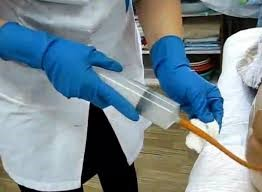

Оснащення: Шприц Жане, стерильна газовивідна трубка (в упаковці), вазелін, шпатель, олія (вазелінова, рослинна) 50-100 мл (за призначенням лікаря), водяна баня, рукавички, фартух, маска, туалетний папір, клейонка, пелюшка, ширма (якщо процедура виконується в палаті), лоток, водонепроникний мішок.
Показання: стійкий закреп
Протипоказання: болі в животі не з'ясованого генезу, шлунково-кишкова кровотеча
|
Етапи |
Послідовність дій |
Обгрунтування |
|
Підготовчий етап |
1.Пояснити пацієнту сутність і хід майбутньої процедури та отримати згоду пацієнта на її проведення |
Заохочення пацієнта до співпраці. Дотримується право пацієнта на інформацію |
|
2. Якщо процедура проводиться в палаті, відгородити пацієнта ширмою и |
Забезпечується інтимність виконання процедур |
|
|
3. Підігріти олію до 38 °С |
Забезпечується можливість проведення процедури. |
|
|
4. Вимити і висушити руки. Надіти рукавички, маску, водонепроникний фартух |
Забезпечується інфекційна безпека |
|
|
5. Набрати в шприц Жане 50 (100) мл теплої олії |
Тепла олія, не подразнюючи кишок, обгортає і розріджує калові маси |
|
|
6.Постелити на ліжко клейонку, а на неї пелюшку. Попросити пацієнта лягти на лівий бік або допомогти йому. Якщо пацієнт не може самостійно повертатися на лівий бік. Ноги пацієнта повинні бути зігнуті в колінах і трохи приведені до живота. У разі неможливості покласти пацієнта на лівий бік, процедуру постановки клізми провести в положенні пацієнта лежачи на спині. |
6.Постелити на ліжко клейонку, а на неї пелюшку. Попросити пацієнта лягти на лівий бік або допомогти йому. Якщо пацієнт не може самостійно повертатися на лівий бік. Ноги пацієнта повинні бути зігнуті в колінах і трохи приведені до живота. У разі неможливості покласти пацієнта на лівий бік, процедуру постановки клізми провести в положенні пацієнта лежачи на спині. Допустиме положення для даної процедури У зв’язку з анатомічною особливістю розташування прямої та сигмоподібної кишок полегшується виконання процедури. Допустиме положення для даної процедури |
|
|
Основний етап |
1.Увести газовивідну трубку (див. Протокол застосування газовивідної трубки) |
Забезпечується виконання процедури |
|
2. Приєднати до трубки шприц Жане і повільно, поштовхоподібними рухами, ввести олію |
Забезпечується введення олії на достатню глибину |
|
|
3.Перегнути газовивідну трубку, від'єднати шприц Жане, набрати в нього трохи повітря, приєднати до трубки і проштовхнути залишки олії в пряму кишку |
Запобігається витікання олії з трубки та повне введення олії в пряму кишку |
|
|
4.Витягти газовивідну трубку і покласти її разом з шприцем Жане у дезінфекційний розчин  |
Забезпечується інфекційна безпека |
|
|
Завершальний етап |
1.Якщо пацієнт безпомічний, витерти туалетним папером шкіру в ділянці відхідника в напрямку спереду назад (у жінок) |
Запобігання інфікуванню сечовивідних шляхів і мацерації ділянки промежини |
|
2.Забрати клейонку, пелюшку та викинути їх у водонепроникний мішок |
Забезпечується інфекційна безпека |
|
|
3.Зняти водонепроникний фартух, рукавички, маску; викинути їх у водонепроникний мішок. Вимити і висушити руки |
Забезпечується інфекційна безпека |
|
|
4. Укрити пацієнта ковдрою, допомогти йому набути зручного положення. Прибрати ширму |
Забезпечуються комфортні умови для відпочинку |
|
|
5. Провести оцінку ефективності процедури через 10-12 год |
Підсумкова оцінка досягнення мети |
|
|
6. Зробити запис про виконання процедури і реакцію на неї пацієнта у відповідну медичну документацію |
Забезпечується документування процедури та послідовність |